Selva que alimenta
Una experiencia de realidad virtual que lleva al usuario desde un plato servido en la ciudad hasta la chagra amazónica donde nacieron sus ingredientes. Yo la llevé a Unity: la integración en el visor y todas sus interacciones.
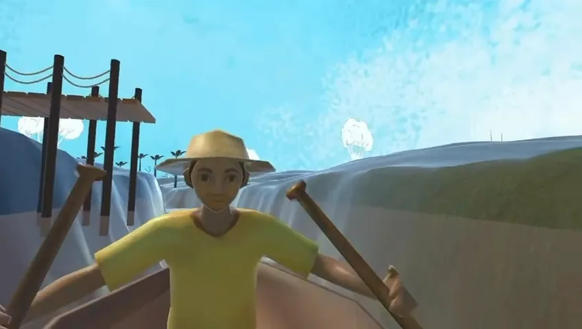
Contexto
Selva que alimenta es la pieza de realidad virtual de un proyecto más grande, hecho en conjunto con estudiantes de diseño gráfico. Busca que la cocina amazónica se valore como herencia y no como «comida exótica», mostrando de dónde viene lo que se come.
El equipo de diseño definió la historia, el arte y cada interacción en un documento. Mi trabajo fue convertir ese documento en algo que funcionara dentro del visor.
Mi rol
- Integración en Unity. Monté las escenas con los modelos y el arte del equipo de diseño y armé la experiencia para Meta Quest 3 con Meta XR SDK.
- Todas las interacciones. Agarrar, pellizcar, teletransportarse, subir y bajar de la canoa, cocinar y el menú que aparece en la mano.
- Manos y controles. La experiencia se juega con las manos o con controles, y se puede pasar de uno a otro.
Los modelos, las ilustraciones, la historia y el diseño de las interacciones son del equipo de diseño gráfico; yo los integré siguiendo sus directrices.
La experiencia
Un recorrido hacia atrás: del plato a la tierra donde se cultivó, para volver a prepararlo donde nació.
-
01
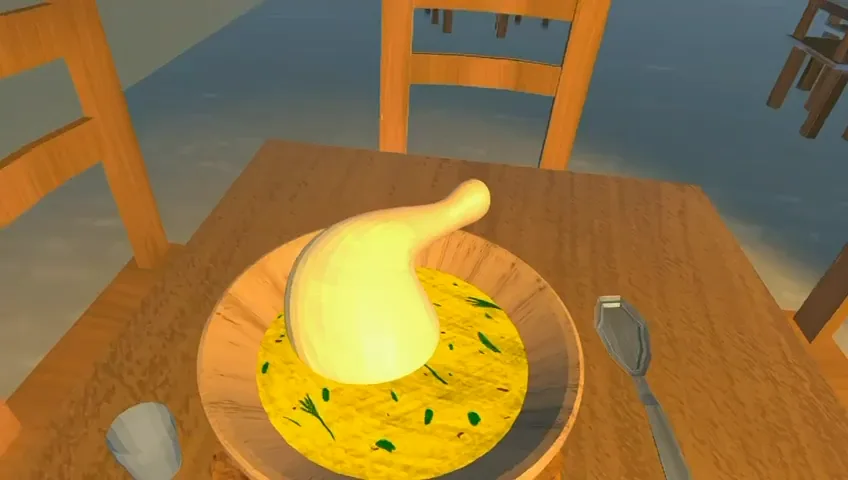
Restaurante
Un Inchicapí servido en la ciudad. Al tomar la cuchara, la escena se detiene: ¿de dónde viene este plato?
-
02
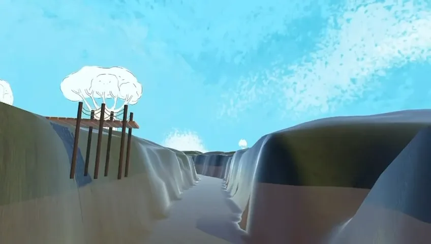
Río
Una canoa lleva al usuario río arriba y se detiene en cada parada.
-
03
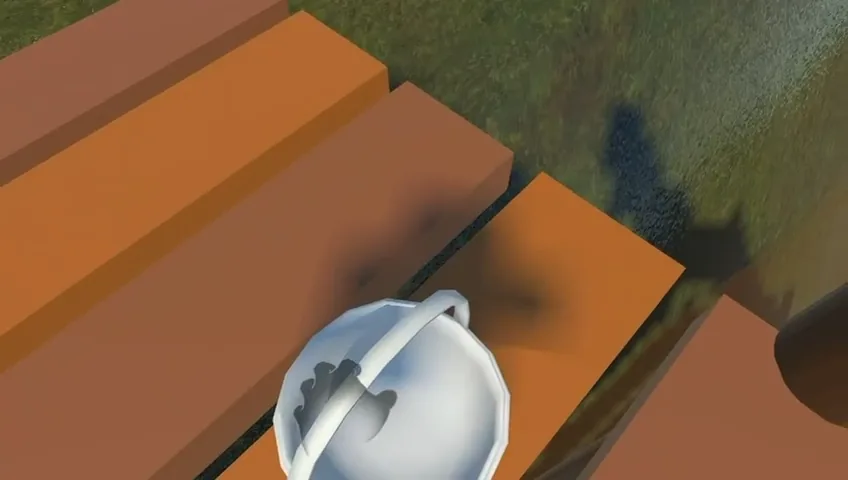
Chagras
En dos chagras se cosechan los ingredientes, maíz, maní, yuca y sacha culantro, y van al canasto.
-
04
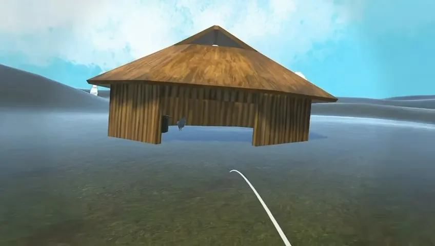
Maloca
La casa comunal, donde espera la olla en el fogón.
-
05
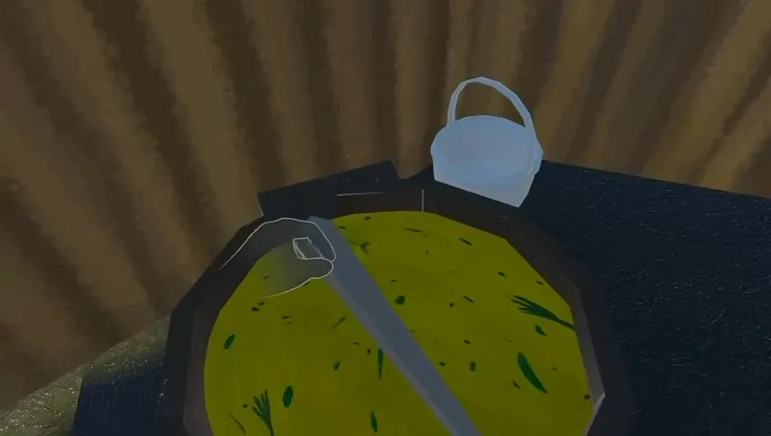
La olla
Se echan los ingredientes del canasto y se mezcla con el cucharón.
-
06
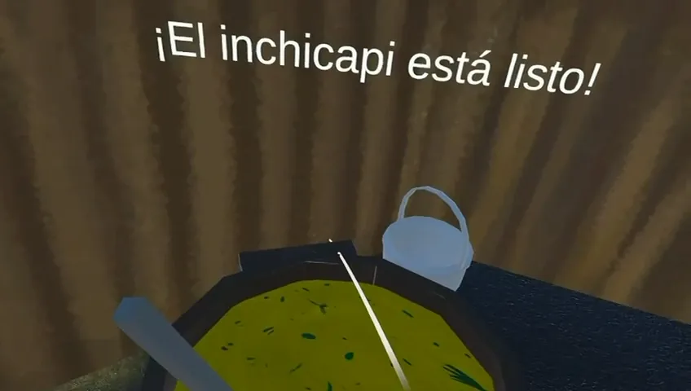
Listo
El plato del restaurante, preparado ahora donde nació.
Del documento al visor
El documento de diseño describía cada interacción como un gesto y su resultado. Así quedaron en Unity.
- Tomar la cuchara
- La escena se detiene y aparece la pregunta que inicia el viaje.
- Pellizcar un botón flotante
- «Iniciar recorrido al origen», «Subir a la canoa», «Bajar de la canoa».
- Subir a la canoa
- La canoa recorre el río sola y para en cada chagra y en la maloca.
- Apuntar y soltar
- Teletransporte con arco y círculo de aterrizaje.
- Agarrar un ingrediente
- Se cosecha y va al canasto.
- Echar el canasto en la olla, mezclar
- La sopa se prepara con el movimiento del cucharón.
- Girar la mano
- Aparece el menú con el mapa del recorrido: dónde estás y qué paradas faltan.
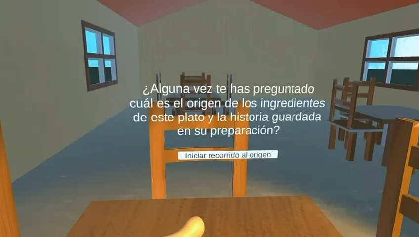
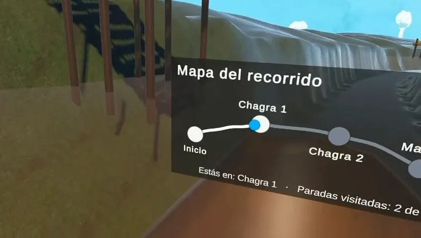
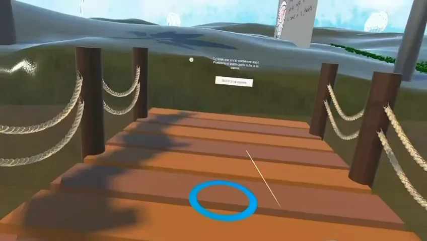
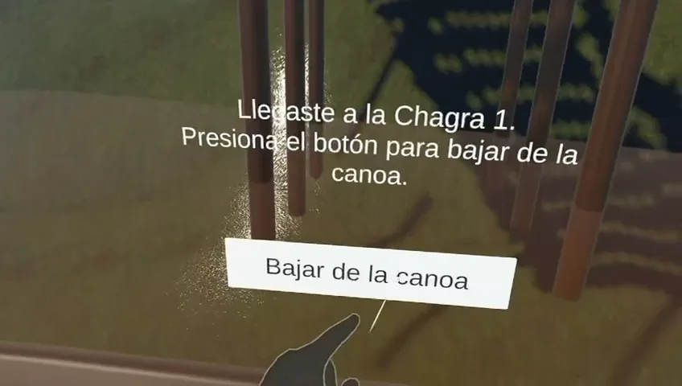
Retos técnicos
-
5.1
Manos y controles a la vez
El framework de interacción de Meta apagaba el tracking de manos apenas detectaba un control conectado, aunque el usuario lo hubiera soltado. En vez de modificar el SDK, inyecté en tiempo de ejecución una condición propia: la pregunta pasó de «¿hay un control?» a «¿el control está en la mano?». Los dos modos conviven sin tocar código de terceros.
-
5.2
Un terreno compartido entre dos equipos
El terreno era un archivo binario que dos equipos editaban en ramas distintas, y tocarlo a mano garantizaba conflictos al fusionar. Hice una herramienta de editor que aplica el ajuste por código, siempre igual, y documenté cómo reconciliarlo en cada fusión.
-
5.3
Una voz que se oiga en una sala con ruido
En ambientes ruidosos la voz no se escuchaba, y en Unity subir el volumen de un AudioSource por encima de 1 no tiene efecto. Escribí un filtro de audio propio que amplifica la voz y curva los picos en vez de cortarlos, para que suene más fuerte sin distorsión audible.
// Por cada muestra: amplificar y curvar los picos (soft clipping)
float x = muestra * ganancia;
float a = Mathf.Abs(x);
if (a > umbral)
a = umbral + (1f - umbral) * Tanh((a - umbral) / (1f - umbral));
muestra = Mathf.Sign(x) * a;OnAudioFilterRead.Resultado
La experiencia completa corre en Meta Quest 3, del restaurante a la maloca, con las manos o con controles. Se presentó en la muestra de proyectos de diseño de noviembre de 2026.
Las imágenes son de una build anterior: la versión presentada sumó menús nuevos y más assets del equipo de diseño.